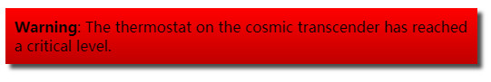

高级盒子效果
目标：
要了解如何使用高级的盒子效果，并了解一些在CSS语言中出现的新样式工具。
盒子阴影
IE9+支持，对于旧IE版本的用户可能需要处理没有阴影的情况，所以只要测试一下设计，确保内容在没有 box-shadow的情况下是清晰可见的。
box-shadow属性允许将一个或多个阴影应用到一个元素盒子中。
box-shadow: 5px 5px 5px rgba(0,0,0,0.7);
1. 第一个长度值是水平偏移量（horizontal offset ）——即阴影从原盒子中偏移，阴影向右距盒子的距离，(如果值为负的话则为左)。
2. 第二个长度值是垂直偏移量（vertical offset）——即阴影向下距盒子的距离(如果值为负则向上)。
3. 第三个长度的值是模糊半径（blur radius）——阴影的模糊度。
4. 第四个值是阴影的颜色。
可以使用任何长度和颜色单位来定义这些值。
HTML：
<article class="simple">
<p><strong>Warning</strong>: The thermostat on the cosmic transcender has reached a critical level.</p>
</article>
CSS：
p {
margin: 0;
}
article {
max-width: 500px;
padding: 10px;
background-color: red;
background-image: linear-gradient(to bottom, rgba(0,0,0,0), rgba(0,0,0,0.25));
}
.simple {
box-shadow: 5px 5px 5px rgba(0,0,0,0.7);
}
效果图：

多个盒子阴影
在单个box-shadow声明中可以用逗号分隔指定多个盒子阴影，
p {
margin: 0;
}
article {
max-width: 500px;
padding: 10px;
background-color: red;
background-image: linear-gradient(to bottom, rgba(0,0,0,0), rgba(0,0,0,0.25));
}
.multiple {
box-shadow: 1px 1px 1px black,
2px 2px 1px black,
3px 3px 1px red,
4px 4px 1px red,
5px 5px 1px black,
6px 6px 1px black;
}
效果图：

在这里，我们创建了一个带有多个颜色图层的凸起的盒子。但是你可以用任何你想要的方式来使用box-shadow盒子阴影，例如，用基于多个光源的阴影来创建一个更加真实的外观。
其他盒子阴影特点（inset阴影）
box-shadow有一个inset关键字可用——把它放在一个影子声明的开始，使盒子阴影变成一个内部阴影，而不是一个外部阴影。
inset关键字会有一个外凸的效果：使阴影出现在盒子内部下方并且在相反的角落：例如会使带正x/y值的阴影出现在盒子的左上方（与原本出现在右下方相反）
HTML：
<button>Press me!</button>
CSS：
button {
width: 150px;
font-size: 1.1rem;
line-height: 2;
border-radius: 10px;
border: none;
background-image: linear-gradient(to bottom right, #777, #ddd);
box-shadow: 1px 1px 1px black,
inset 2px 3px 5px rgba(0,0,0,0.3),
inset -2px -3px 5px rgba(255,255,255,0.5);
}
button:focus, button:hover {
background-image: linear-gradient(to bottom right, #888, #eee);
}
button:active {
box-shadow: inset 2px 2px 1px black,
inset 2px 3px 5px rgba(0,0,0,0.3),
inset -2px -3px 5px rgba(255,255,255,0.5);
}
这个按钮的默认状态下设置了一个简单的黑色盒子阴影（在最下方），并且加上了一对inset阴影：一个亮白的（右下角），一个黑暗的（左上角），位于按钮的两个对角上，以此给按钮一种很棒的阴影效果。
1、button未设置box-shadow
效果图：

2、button设置box-shadow: 1px 1px 1px black;
效果图：

3、 button设置box-shadow: 1px 1px 1px black,inset 2px 3px 5px rgba(0,0,0,0.3);
效果图：

4、button设置box-shadow: 1px 1px 1px black,inset 2px 3px 5px rgba(0,0,0,0.3),inset -2px -3px 5px rgba(255,255,255,0.5);
效果图：

当按钮被按下时，这里的active声明将第一个盒阴影换成一个非常暗的inset阴影。给人一种按钮被按下的样子。
button:active {
box-shadow: inset 2px 2px 1px black,
inset 2px 3px 5px rgba(0,0,0,0.3),
inset -2px -3px 5px rgba(255,255,255,0.5);
}
效果图：

注意: 还有一个可以在box-shadow中设置的值 — 另外一个位于颜色值前面可选的长度值，即spread radius（阴影扩散的距离），如果设置了这个值，将会导致阴影变得比原始的阴影更大（正值）或更小（负值），这个值不是很常用，但是值得一提。
滤镜
Internet Explorer 4到9实现了非标准的滤镜属性。 语法与此语法完全不同，此处未记录。
参考：
PS中滤镜主要是用来实现图像的各种特殊效果,比如模糊啊 锐化啊 马赛克啊 ，都是滤镜的作用。
CSS滤镜提供了一种应用滤镜到元素的方法。它最初是为了向SVG矢量图提供不同的图片效果。现在，CSS滤镜不再局限于在SVG中使用，也可以在图片、文字和其它元素上使用。
只需要使用filter属性，并且给一个特定的滤镜函数的值，滤镜就可以应用在任何元素上，例如drop-shadow()的工作方式以及产生的效果和 box-shadow 或text-shadow十分相似，但是滤镜很好的地方是它也作用于盒子的内容区（content），而不仅仅是盒子本身。这里主要说drop-shadow()——投影。
HTML：
<p class="filter">Filter</p>
<p class="box-shadow">Box shadow</p>
CSS：
p {
margin: 1rem auto;
padding: 20px;
width: 100px;
border: 5px dashed red;
}
.filter {
-webkit-filter: drop-shadow(5px 5px 1px rgba(0,0,0,0.7));
filter: drop-shadow(5px 5px 1px rgba(0,0,0,0.7));
}
.box-shadow {
box-shadow: 5px 5px 1px rgba(0,0,0,0.7);
}
效果图：

从效果图可以看出：drop-shadow滤镜仿照文本和虚线的border 边框的形状。而盒阴影（box-shadow）仅仅仿照盒的四方形。
我们在filter属性前面写了一个版本-webkit-前缀，这被称为一个 Vendor Prefix （厂商前缀）。在这个实例中，Chrome/Safari/Opera 目前要求这些属性使用-webkit-版本，而Edge 和 Firefox则使用后者：无前缀版本。
Vendor Prefix （供应商前缀）：浏览器供应商有时会在试验或非标准的CSS属性和JavaScript API中添加前缀，因此理论上开发人员可以在尝试新想法。 开发人员应该使用未加前缀的属性，直到浏览器表现标准化试验或非标准的CSS属性再使用。因为试验性的特性可能会有改变，这可能会导致你的代码被破坏，在前缀被去除之前，最好还是仅仅实验这些特性。
如果你确实决定在你的代码中使用前缀，确保你包含了所有的前缀以及无前缀的版本，这样才会有尽可能多的浏览器能够使用这些特性。
如果您确实希望在工作中使用这些特性，请彻底地在浏览器中进行测试并检查。确保这些特性不工作的地方，站点仍然可用。
更多关于滤镜的例子，参考：https://mdn.github.io/learning-area/css/styling-boxes/advanced_box_effects/filters.html
https://github.com/mdn/learning-area/blob/master/css/styling-boxes/advanced_box_effects/filters.html
滤镜属性详解
● grayscale 灰度比例（黑白照） 值为0-1之间的小数（百分比）
● sepia 褐色（有种复古的旧照片感觉） 值为0-1之间的小数（百分比）
● saturate 饱和度（饱和度是指色彩的鲜艳程度） 值为num
● hue-rotate 色相旋转（色彩的相貌，就是指物体的颜色） 值为angle
● invert 反色（反色又叫补色，例如黑的补色是白色，红的补色是蓝绿色） 值为0-1之间的小数（百分比）
● opacity 不透明度 值为0-1之间的小数（百分比）
● brightness 亮度 值为0-1之间的小数（百分比）
● contrast 对比度（对比度是指画面的明暗反差程度。增加对比度，画面中亮的地方会更亮，暗的地方会更暗，明暗反差增强。） 值为num
● blur 模糊 值为length
● drop-shadow 投影
灰度

褐色

模糊

反色

反色

混合模式
IE不支持，Edge不支持，Safari 也仅仅支持部分混合模式选项。
CSS混合模式允许我们为元素添加一个混合模式 ：当两个元素重叠时，指定一个混合的效果——最终每个像素所展示的颜色将会是原来一层像素的颜色和下面一层像素的颜色相组合之后的结果。
这里要用到两个CSS属性：
background-blend-mode：将单个元素的背景图片与背景颜色混合在一起。
mix-blend-mode：将一个元素与它覆盖的那些元素的背景（background）和内容(content)混合在一起。
单个元素混合
background-blend-mode
HTML
<div>
</div>
<div class="multiply">
</div>
CSS：
div {
width: 250px;
height: 130px;
padding: 10px;
margin: 10px;
display: inline-block;
background: url(https://mdn.mozillademos.org/files/13090/colorful-heart.png) no-repeat center 20px;
background-color: green;/*给<div>添加一个背景图片和一个绿色的背景色*/
}
.multiply {
background-blend-mode: multiply;
}
效果图：

多个元素混合
多层混合（mix-blend）
HTML：
<article>
No mix blend mode
<div>
</div>
<div>
</div>
</article>
<article>
Multiply mix
<div class="multiply-mix">
</div>
<div>
</div>
</article>
CSS：
article {
width: 300px;
height: 180px;
margin: 10px;
position: relative;
display: inline-block;
}
div {
width: 250px;
height: 130px;
padding: 10px;
margin: 10px;
}
article div:first-child {
position: absolute;
top: 10px;
left: 0;
background: url(https://mdn.mozillademos.org/files/13090/colorful-heart.png) no-repeat center 20px;
background-color: green;
}
article div:last-child {
background-color: purple;
position: absolute;
bottom: -10px;
right: 0;
z-index: -1;
}
.multiply-mix {
mix-blend-mode: multiply;
}
效果图：


可以看到多层混合（mix-blend）不仅混合了两种背景图像，还混合了在<div>下面的颜色。
-webkit-background-clip: text
Chrome、Safari和Opera支持,Firefox正在实现
background-clip的 text 值与专属的 -webkit-text-fill-color: transparent; 特性一起使用时，这允许您将背景图片剪贴到元素文本的形状，从而产生一些不错的效果。这不是一个正式的标准，但是已经在多个浏览器中实现了，它很流行，并且被开发人员广泛使用。
这两种属性都需要一个-webkit-供应商前缀，甚至对于非webkit/Chrome内核的浏览器来说也是如此。
.text-clip {
-webkit-background-clip: text;
-webkit-text-fill-color: transparent;
}
为什么其他浏览器会实现-webkit-前缀？主要是为了浏览器兼容性，它一开始看起来好像会在其他浏览器中出错，而实际上其他浏览器遵循标准被迫实现了一些这样的功能。这就凸显了在你的工作中使用非标准/带前缀的CSS特性的危险——这不仅会导致浏览器兼容性问题，而且还会发生变化，因此你的代码随时可能崩溃。更好的做法是坚持标准。
如果您确实希望在工作中使用这些特性，请彻底地在浏览器中进行测试，并检查。确保这些特性不工作的地方，站点仍然可用。
效果图：

参考：https://mdn.github.io/learning-area/css/styling-boxes/advanced_box_effects/background-clip-text.html